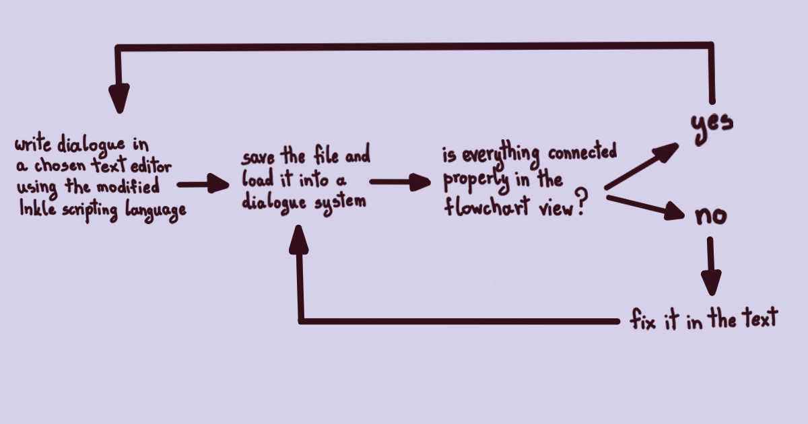
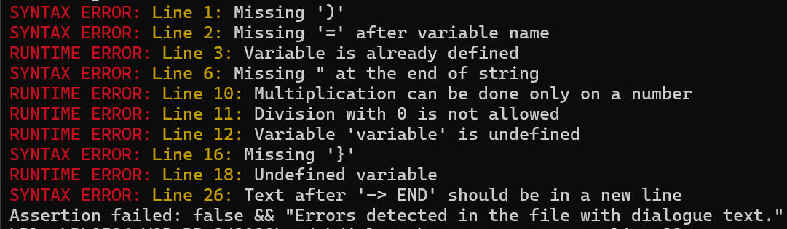
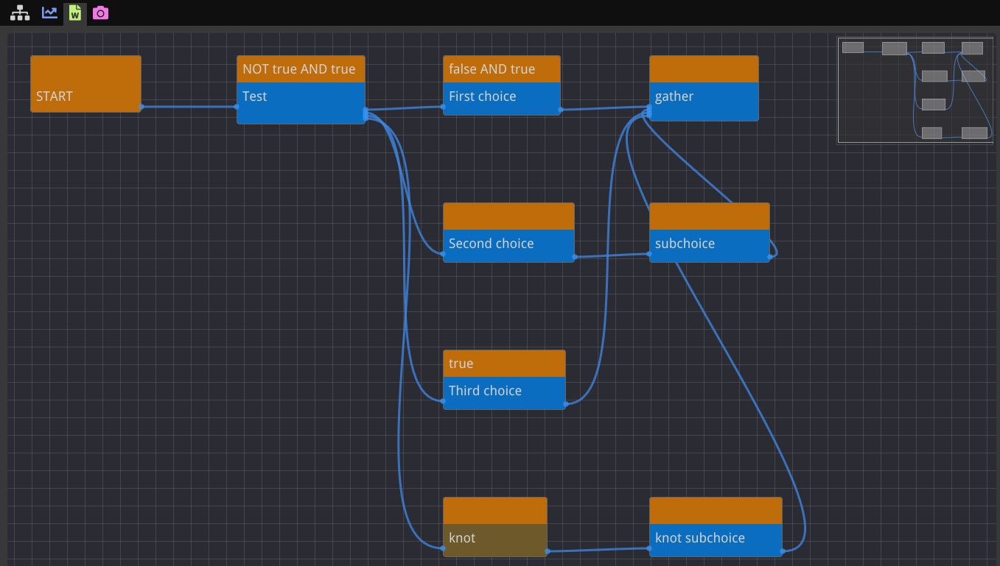
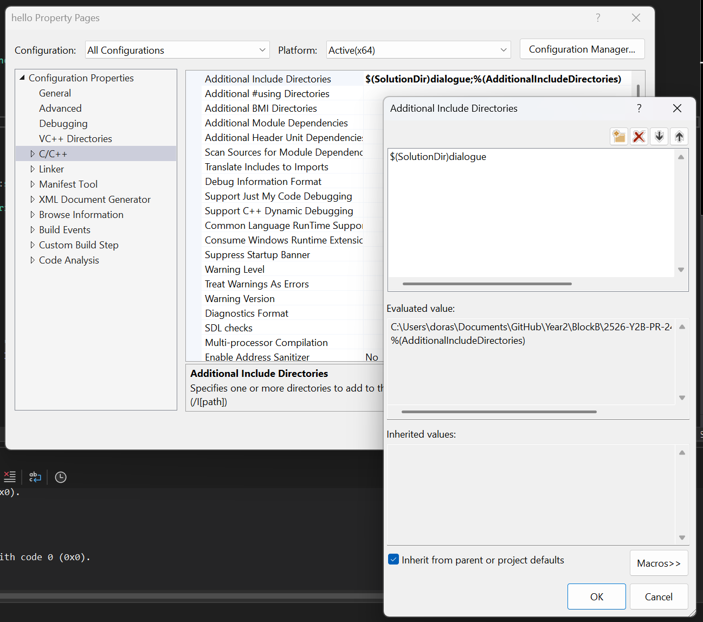
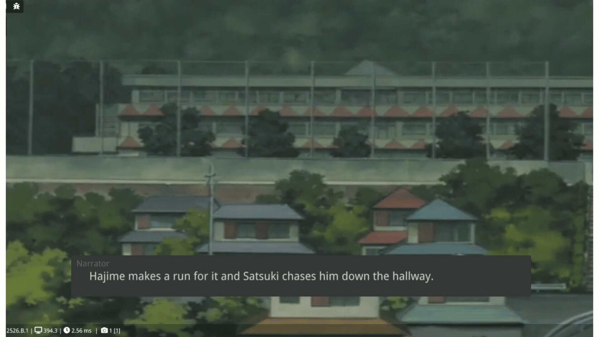

Introduction
A dialogue system is one of the main features of every story-driven game. As such, creating it comes with its own set of challenges.
It's a tool aimed at designers, so making their creative process as productive as possible and their flow uninterrupted should be the number one priority. However, enough thought should also be put into making it easy to embed into other project, as well as making its performance efficient. Otherwise there's no reason for people to use it.
In this article I will talk about the main ideas behind my dialogue system and how you can use it in your own C++ projects.
Interface and workflow
The first concern of creating a dialogue system should be an interface. It needs to be intuitive for designers to use, while still giving them enough functionality to create what they want. I researched many narrative tools, from scripting languages, like Yarn Spinner, Inkle and Inform 7, to full on engines, like Narrat, Decker, Ren'Py, Bitsy, Twine and RPG Maker. While studying them, I came to the following conclusions regarding what the best choice for my dialogue system would be:
- user writes dialogue in a text file using a text editor of their choice, dialogue system reads it ⟹ letting user just write the dialogue ensures that their flow is never broken and letting them do that in any text editor gives them the freedom to do it in the one they're the most comfortable working in
- preview of the dialogue in form of a flowchart ⟹ provides a clearer overview of how the dialogue is connected and makes it easier to spot errors in branching
- scripting language based on Inkle ⟹ Inkle is a widespread narrative tool and many narrative designers are already familiar with its syntax, making a switch to my tool easier; it also provides all the important dialogue features a user could need
Now that the interface is decided, we can also deduct the workflow a user will go through to create a dialogue:

This marks the end of the reasoning behind my design choices. Next on we have the actual programming part, starting off with creating an interpreter.
Scripting language
Actually, before we start writing an interpreter, I want to define the rules of the language that will be used. I already mentioned that it will be based on Inkle, but Inkle's scripting language has many features that make it usable as a standalone tool. However, this dialogue system is made to be implemented in the already existing engine, so features like functions and classes are not needed. That's why the scripting language will consist of the following rules:
Scripting language rules
Variable
- use "VAR" to define them
- name needs to be a single word with no spaces
- supports strings, numbers and Booleans (true/false)
- use "~" to change them later on, needs to be in a separate line
Knot
- use to separate your text into smaller chunks, similar to functions just without the parameters
- use "== knot_name ==" when defining it (number of '=' doesn't matter, as long as there are at least 2)
- name needs to be a single word with no spaces
- use "->" when calling it
Choice
- use '*' for a choice that appears only the first time you encounter it
- use '+' for a permanent choice
- number of '*' or '+' indicates the choice sublevel, maximum level is 20
- if you want the choice text to be different from the outcome text, define it inside [ ] brackets
- use '-' to gather the choices back together
Condition
- write it inside { } brackets
- can be used in front of a normal text, choice or a knot call
- supports operators: + - * / % ( ) = != < <= > >= AND OR NOT
- if the result is a Boolean value (true/false), it determines whether the following text will be shown or not, otherwise the result gets inserted into the text
- if there are two conditions one after another, it will be treated as if there's AND between them
End
- write "-> END" at the end of the branch to indicate the end of the story flow
Now we can continue to Creating an interpreter.
Creating an interpreter
To make an interpreter for Inkle's scripting language I read a book called Crafting Interpreters by Robert Nystrom. It explains everything one needs to know to create an interpreter, as well as contains the code for its implementation in both Java and C++, with description of what exactly each line of the code does. I mainly focused on the first 8 chapters of the book, since they explained the basics, and the rest of the chapters was more focused on interpreting functions, classes and other more complicated structures which aren't a part of the scripting language defined above.
I based the scanner, as well as parsing and interpreting mathematical and logical expression, on the one explained in the book. Therefore I will refrain from copying the code here, since it will take up most of the space. If you want to know how to write it, I highly recommend going through those first chapters of the book yourself. You can find the online version of the book in Resources.
Dialogue system as a directed (non-acyclic) graph
During the research, I also came to the conclusion that it would be best to implement the dialogue system as a directed graph. Parser is the one responsible for its creation. It goes through text tokens produced by the scanner and properly connects them based on their type. That produces a graph where each node contains the text, its condition, node type (text, choice, knot call...) and pointers to the node's children, or better said pointers to nodes connected to it. It also produces a separate graph for each of the knots. That way the nodes will not be copied every time a knot is called, but only a knot call node will be created. The main function responsible for this is shown in the following code segment.
ParsingResult Parser::ParseText(const Tokens& tokens)
ParsingResult Parser::ParseText(const Tokens& tokens)
{
int current = 0;
bool gather = false;
std::shared_ptr startNode = std::make_shared(Node::Type::START, "START");
std::shared_ptr currentNode = startNode;
NodesPtr choicesParentNodes(20, nullptr);
std::vector choicesEndNodes(20);
bool choice = false;
bool stickyChoice = false;
int choiceLevel = 0;
int gatherLevel = 0;
Variables globalVariables;
std::unique_ptr expression = nullptr;
std::string expressionString = " ";
Knots knots;
KnotCallbacks knotCalls;
while (current < tokens.size())
{
switch (tokens[current].type)
{
case Token::Type::TEXT:
if (gather)
{
currentNode = std::make_shared(Node::Type::TEXT, tokens[current].text, std::move(expression), expressionString);
for (int i = gatherLevel; i < choicesEndNodes.size(); i++)
for (int j = 0; j < choicesEndNodes[i].size(); j++)
if (choicesEndNodes[i][j]->children.empty() && choicesEndNodes[i][j]->type != Node::Type::END)
choicesEndNodes[i][j]->children.push_back(currentNode);
for (int i = gatherLevel; i < choicesEndNodes.size(); i++)
choicesEndNodes[i].clear();
choicesParentNodes[gatherLevel] = nullptr;
gather = false;
}
else
{
if (choice)
{
choicesParentNodes[choiceLevel]->children.push_back(std::make_shared(Node::Type::CHOICE, tokens[current].text, std::move(expression), expressionString));
choice = false;
currentNode = choicesParentNodes[choiceLevel]->children.back();
}
else if (stickyChoice)
{
choicesParentNodes[choiceLevel]->children.push_back(std::make_shared(Node::Type::STICKY_CHOICE, tokens[current].text, std::move(expression), expressionString));
stickyChoice = false;
currentNode = choicesParentNodes[choiceLevel]->children.back();
}
currentNode->children.push_back(std::make_shared(Node::Type::TEXT, tokens[current].text, std::move(expression), expressionString));
currentNode = currentNode->children.back();
}
expression = nullptr;
expressionString = " ";
current++;
break;
case Token::Type::CHOICE:
choice = true;
case Token::Type::STICKY_CHOICE:
if (!choice) stickyChoice = true;
choicesEndNodes[choiceLevel].push_back(currentNode);
{
int previousChoiceLevel = choiceLevel;
choiceLevel = std::stoi(tokens[current].text) - 1;
if (previousChoiceLevel > choiceLevel)
choicesParentNodes[previousChoiceLevel] = nullptr;
}
if (choiceLevel >= 20)
{
ErrorSystem::DetectedError("Exceeded maximum sublevel of choices", ErrorSystem::Type::RUNTIME, tokens[current].line);
choiceLevel = 19;
}
if (choicesParentNodes[choiceLevel] == nullptr)
choicesParentNodes[choiceLevel] = currentNode;
current++;
break;
case Token::Type::CHOICE_TEXT:
if (choice)
{
choicesParentNodes[choiceLevel]->children.push_back(std::make_shared(Node::Type::CHOICE, tokens[current].text, std::move(expression), expressionString));
choice = false;
}
else if (stickyChoice)
{
choicesParentNodes[choiceLevel]->children.push_back(std::make_shared(Node::Type::STICKY_CHOICE, tokens[current].text, std::move(expression), expressionString));
stickyChoice = false;
}
currentNode = choicesParentNodes[choiceLevel]->children.back();
expression = nullptr;
expressionString = " ";
current++;
break;
case Token::Type::GATHER:
choicesEndNodes[choiceLevel].push_back(currentNode);
gatherLevel = std::stoi(tokens[current].text) - 1;
if (gatherLevel >= 20)
{
ErrorSystem::DetectedError("Exceeded maximum sublevel of gathering", ErrorSystem::Type::RUNTIME, tokens[current].line);
gatherLevel = 19;
}
gather = true;
current++;
break;
case Token::Type::KNOT_CALL:
knotCalls.insert({tokens[current].text, tokens[current].line});
if (gather)
{
currentNode = std::make_shared(Node::Type::KNOT_CALL, tokens[current].text, std::move(expression), expressionString);
for (int i = gatherLevel; i < choicesEndNodes.size(); i++)
for (int j = 0; j < choicesEndNodes[i].size(); i++)
if (choicesEndNodes[i][j]->children.empty() && choicesEndNodes[i][j]->type != Token::Type::END)
choicesEndNodes[i][j]->children.push_back(currentNode);
for (int i = gatherLevel; i < choicesEndNodes.size(); i++)
choicesEndNodes[i].clear();
choicesParentNodes[gatherLevel] = nullptr;
gather = false;
}
else
{
if (choice)
{
choicesParentNodes[choiceLevel]->children.push_back(std::make_shared(Node::Type::CHOICE, " ", std::move(expression), expressionString));
choice = false;
currentNode = choicesParentNodes[choiceLevel]->children.back();
}
else if (stickyChoice)
{
choicesParentNodes[choiceLevel]->children.push_back(std::make_shared(Node::Type::STICKY_CHOICE, " ", std::move(expression), expressionString));
stickyChoice = false;
currentNode = choicesParentNodes[choiceLevel]->children.back();
}
currentNode->children.push_back(std::make_shared(Node::Type::KNOT_CALL, tokens[current].text, std::move(expression), expressionString));
currentNode = currentNode->children.back();
}
expression = nullptr;
expressionString = " ";
current++;
break;
case Token::Type::KNOT_DEF:
currentNode = std::make_shared(Node::Type::START, tokens[current].text);
knots.insert({tokens[current].text, currentNode});
choicesParentNodes = NodesPtr(20, nullptr);
choicesEndNodes = std::vector(20);
expression = nullptr;
expressionString = " ";
current++;
break;
case Token::Type::VAR_DEF:
{
current++;
std::string variable = tokens[current].text;
current++;
if (tokens[current].type != Token::Type::EQUAL)
{
ErrorSystem::DetectedError("Missing '=' after variable name", ErrorSystem::Type::SYNTAX, tokens[current].line);
current--;
}
current++;
if (globalVariables.IsVariableDefined(variable))
ErrorSystem::DetectedError("Variable is already defined", ErrorSystem::Type::RUNTIME, tokens[current].line);
else
{
auto calculation = ReturnExpression(tokens, current);
globalVariables.SetVariable(variable, Interpreter::InterpretExpression(std::move(calculation), globalVariables));
}
}
break;
case Token::Type::SET_VAR:
current++;
if (!globalVariables.IsVariableDefined(tokens[current].text))
{
ErrorSystem::DetectedError("Variable \'" + tokens[current].text + "\' is undefined", ErrorSystem::Type::RUNTIME, tokens[current].line);
break;
}
currentNode->children.push_back(std::make_shared(Node::Type::SET_VAR, tokens[current].text));
currentNode = currentNode->children.back();
current++;
if (tokens[current].type != Token::Type::EQUAL)
{
ErrorSystem::DetectedError("Missing '=' after variable name", ErrorSystem::Type::SYNTAX, tokens[current].line);
current--;
}
current++;
{
int start = current;
currentNode->condition = std::move(ReturnExpression(tokens, current));
currentNode->conditionString = GetExpressionString(tokens, start, current);
auto valueToken = Interpreter::InterpretExpression(currentNode->condition, globalVariables);
if (globalVariables.GetVariableType(tokens[current].text) == Token::Type::NUMBER && valueToken.type != Token::Type::NUMBER)
ErrorSystem::DetectedError("Can't assign non-number value to a number variable", ErrorSystem::Type::RUNTIME, tokens[current].line);
}
break;
case Token::Type::CONDITION:
current++;
if (expression != nullptr)
{
int start = current;
expression = std::make_unique(std::move(expression), std::make_unique(Token::Type::AND, "AND", tokens[current].line), ReturnExpression(tokens, current));
expressionString += "AND " + GetExpressionString(tokens, start, current);
}
else
{
int start = current;
expression = ReturnExpression(tokens, current);
expressionString = GetExpressionString(tokens, start, current);
}
Interpreter::InterpretExpression(expression, globalVariables);
break;
case Token::Type::SAME_LINE:
currentNode->children.push_back(std::make_shared(Node::Type::SAME_LINE, ""));
currentNode = currentNode->children.back();
current++;
break;
case Token::Type::END:
currentNode->children.push_back(std::make_shared(Node::Type::END, "END"));
currentNode = currentNode->children.back();
current++;
break;
default:
current++;
break;
}
}
for (auto call = knotCalls.begin(); call != knotCalls.end(); ++call)
if (knots.find(call->first) == knots.end())
ErrorSystem::DetectedError("Knot " + call->first + " is undefined", ErrorSystem::Type::RUNTIME, call->second);
auto result = ParsingResult();
result.startNode = startNode;
result.globalVariables = globalVariables;
result.knots = knots;
return result;
}
After a parser creates graphs, dialogue system stores pointers to the starting node of each one of them, as well as the variables created inside the text. It then goes through the main graph, node by node, and returns the node's text and choices following it, if there are any. Function in charge of returning the next dialogue segment is shown bellow.
DialogueSegment DialogueSystem::NextDialogueSegment(const int chosenOptionIdx)
DialogueSegment DialogueSystem::NextDialogueSegment(const int chosenOptionIdx)
{
std::string text = "";
std::vector choices{};
if (chosenOptionIdx >= 0 && chosenOptionIdx < currentNode->children.size())
{
auto indx = GetChildIndex(chosenOptionIdx);
currentNode = currentNode->children[indx];
}
auto dialogueSegment = GetNextDialogueSegment(text, choices);
ErrorSystem::CheckForErrors();
return dialogueSegment;
}
DialogueSegment DialogueSystem::GetNextDialogueSegment(std::string& text, Choices& choices)
{
if (currentNode == nullptr)
{
ErrorSystem::DetectedError("Missing '-> END' at the end of story flow", ErrorSystem::Type::WARNING);
return DialogueSegment(text, choices);
}
if (!Interpreter::IsConditionTrue(currentNode->condition, variables, text))
if (!CurrentNodeHasChoices())
{
SetNewCurrentNode();
return GetNextDialogueSegment(text, choices);
}
else
return DialogueSegment(text, GetChoices());
switch (currentNode->type)
{
case Node::Type::CHOICE:
currentNode->condition = std::make_unique(nullptr, std::make_unique(Token::Type::FALSE, "false", 0), nullptr);
case Node::Type::STICKY_CHOICE:
currentNode = currentNode->children.front();
return GetNextDialogueSegment(text, choices);
case Node::Type::TEXT:
text += currentNode->text;
if (!CurrentNodeHasChoices() && !currentNode->children.empty())
if (currentNode->children.front()->type == Node::Type::SAME_LINE)
{
currentNode = currentNode->children.front()->children.front();
return GetNextDialogueSegment(text, choices);
}
break;
case Node::Type::KNOT_CALL:
if (!currentNode->children.empty())
{
returnToNodes.push_back(std::make_shared(Node::Type::START, ""));
for (int i = 0; i < currentNode->children.size(); i++)
returnToNodes.back()->children.push_back(currentNode->children[i]);
}
currentNode = knots[currentNode->text];
return GetNextDialogueSegment(text, choices);
break;
case Node::Type::SET_VAR:
Interpreter::SetVariable(currentNode->text, currentNode->condition, variables);
text = "";
case Node::Type::START:
if (!CurrentNodeHasChoices() && !currentNode->children.empty())
{
currentNode = currentNode->children.front();
return GetNextDialogueSegment(text, choices);
}
break;
case Node::Type::END:
return DialogueSegment(text, choices);
}
if (CurrentNodeHasChoices())
{
choices = GetChoices();
if (choices.empty())
if (!returnToNodes.empty())
{
currentNode = returnToNodes.back();
returnToNodes.pop_back();
}
else
currentNode = nullptr;
}
else
SetNewCurrentNode();
return DialogueSegment(text, choices);
}
The dialogue system also has an error system which catches all the errors in the text and prints them to the console window, along with their descriptions and the lines they appears in.

Flowchart visualisation
After it finishes loading the text and creating graphs, dialogue system also returns a flowchart data. That data can be used to create a flowchart visualisation of the graphs and is created specifically to work with ImNodes (see Resources).
To make an ImNodes flowchart, I created a new flowchart class inside the engine I'm using and just gave it the data created by the dialogue system. That data contains everything an user would need for creating a flowchart, including the node positions, and doesn't need any extra calculations. Example of the code responsible for loading and rendering a flowchart can be seen bellow.
void DialogueFlowchart::ResetFlowchart(const FlowchartData& newFlowchartData) void DialogueFlowchart::RenderFlowchart()
void DialogueFlowchart::ResetFlowchart(const FlowchartData& newFlowchartData)
{
flowchartData = newFlowchartData;
currentNodes = &flowchartData.nodes;
currentLinks = &flowchartData.links;
previousNodes.clear();
previousLinks.clear();
for (const FlowchartNode& node : *currentNodes)
ImNodes::SetNodeScreenSpacePos(node.id, ImVec2(node.position.x, node.position.y));
}
void DialogueFlowchart::RenderFlowchart()
{
ImNodes::BeginNodeEditor();
ImNodes::PushColorStyle(ImNodesCol_TitleBar, IM_COL32(191, 109, 11, 255));
ImNodes::PushColorStyle(ImNodesCol_TitleBarHovered, IM_COL32(191, 109, 11, 255));
ImNodes::PushColorStyle(ImNodesCol_TitleBarSelected, IM_COL32(191, 109, 11, 255));
ImNodes::PushColorStyle(ImNodesCol_NodeBackground, IM_COL32(11, 109, 191, 255));
ImNodes::PushColorStyle(ImNodesCol_NodeBackgroundHovered, IM_COL32(81, 148, 204, 255));
ImNodes::PushColorStyle(ImNodesCol_NodeBackgroundSelected, IM_COL32(81, 148, 204, 255));
for (const FlowchartNode& node : *currentNodes)
{
auto conditionColor = IM_COL32(191, 109, 11, 255);
auto textColor = IM_COL32(11, 109, 191, 255);
auto hoveredTextColor = IM_COL32(81, 148, 204, 255);
switch (node.type)
{
case FlowchartNode::Type::START_END:
textColor = conditionColor;
hoveredTextColor = IM_COL32(121, 69, 11, 255);
break;
case FlowchartNode::Type::SET_VAR:
textColor = IM_COL32(11, 109, 109, 255);
hoveredTextColor = IM_COL32(81, 148, 148, 255);
break;
case FlowchartNode::Type::KNOT:
textColor = IM_COL32(109, 89, 41, 255);
hoveredTextColor = IM_COL32(179, 129, 51, 255);
break;
}
ImNodes::PushColorStyle(ImNodesCol_TitleBar, conditionColor);
ImNodes::PushColorStyle(ImNodesCol_TitleBarHovered, conditionColor);
ImNodes::PushColorStyle(ImNodesCol_TitleBarSelected, conditionColor);
ImNodes::PushColorStyle(ImNodesCol_NodeBackground, textColor);
ImNodes::PushColorStyle(ImNodesCol_NodeBackgroundHovered, hoveredTextColor);
ImNodes::PushColorStyle(ImNodesCol_NodeBackgroundSelected, hoveredTextColor);
ImNodes::BeginNode(node.id);
ImNodes::BeginNodeTitleBar();
std::string condition = node.condition;
if (condition.length() > 20)
{
condition = condition.substr(0, 20);
condition += "...";
}
ImGui::TextUnformatted(condition.c_str());
ImNodes::EndNodeTitleBar();
ImNodes::BeginStaticAttribute(node.staticAttributeId);
std::string text;
auto textLength = node.text.length();
if (textLength < 20)
{
text = node.text + std::string(23 - textLength, ' ');
}
else
{
auto space = node.text.find(" ", 20);
text = node.text.substr(0, space);
if (space != std::string::npos)
text += "...";
}
ImGui::Text(text.c_str());
ImNodes::EndStaticAttribute();
for (int attribuetId : node.inputAttributeIds)
{
ImNodes::BeginInputAttribute(attribuetId);
ImNodes::EndInputAttribute();
}
for (int attribuetId : node.outputAttributeIds)
{
ImNodes::BeginOutputAttribute(attribuetId);
ImNodes::EndOutputAttribute();
}
ImNodes::EndNode();
}
ImNodes::PopColorStyle();
ImNodes::PopColorStyle();
ImNodes::PopColorStyle();
ImNodes::PopColorStyle();
ImNodes::PopColorStyle();
ImNodes::PopColorStyle();
for (const FlowchartLink& link : *currentLinks)
{
ImNodes::Link(link.id, link.startId, link.endId);
}
ImNodes::MiniMap(0.2f, ImNodesMiniMapLocation_TopRight);
ImNodes::EndNodeEditor();
int nodeId = 0;
if (ImNodes::IsNodeHovered(&nodeId))
{
int startNodeId = (*currentNodes)[0].id;
nodeId -= startNodeId;
ImGui::BeginTooltip();
ImGui::Text((*currentNodes)[nodeId].condition.c_str());
ImGui::Text((*currentNodes)[nodeId].text.c_str());
ImGui::EndTooltip();
//render knot flowchart
if (ImGui::IsMouseDoubleClicked(ImGuiMouseButton_Left))
{
auto knot = flowchartData.knotsNodes.find((*currentNodes)[nodeId].text);
if (knot != flowchartData.knotsNodes.end() && (*currentNodes)[nodeId].type != FlowchartNode::Type::START_END)
{
previousNodes.push_back(currentNodes);
previousLinks.push_back(currentLinks);
currentNodes = &knot->second;
currentLinks = &flowchartData.knotsLinks.find(knot->first)->second;
ImNodes::ClearNodeSelection();
for (const FlowchartNode& node : *currentNodes)
ImNodes::SetNodeScreenSpacePos(node.id, ImVec2(node.position.x, node.position.y));
}
}
}
//render previous flowchart
if (ImGui::IsMouseClicked(ImGuiMouseButton_Right) && !previousNodes.empty())
{
currentNodes = previousNodes.back();
currentLinks = previousLinks.back();
previousNodes.pop_back();
previousLinks.pop_back();
ImNodes::ClearNodeSelection();
for (const FlowchartNode& node : *currentNodes)
ImNodes::SetNodeScreenSpacePos(node.id, ImVec2(node.position.x, node.position.y));
}
//render main flowchart
if (ImGui::IsKeyDown(ImGuiKey_B))
{
ImNodes::ClearNodeSelection();
ResetFlowchart(flowchartData);
}
}

How to use
Now that all the important parts of the dialogue system are explained, it's time for a step by step overview of how to use it.
First, add the dialogue system tool to your solution and include it as an additional library to your project.

If you want a flowchart visualisation, create a flowchart class based on the one shown in Flowchart visualisation and include dialogue_system.hpp file to it. Otherwise just include the header file directly.
#include "dialogue_system.hpp"
Now you can create an instance of a dialogue system and a flowchart.
To set them, you need to have a function that will load a text file into a string. After you created it, you only need to call the following functions on your dialogue system and flowchart objects and you're all set!
std::string script = FunctionForLoadingATextFileIntoAString();
auto flowchartData = dialogueSystem.LoadDialogue(script);
flowchart.ResetFlowchart(flowchartData);
Apart from getting a next dialogue segment, there are a few extra dialogue system functions you can use. You can check if you reached the end of a dialogue flow, set a new dialogue variable or change an existing one, get the value of a specific dialogue variable. The exact names of those functions, as well as their parameters, can be seen bellow.
DialogueSegment NextDialogueSegment(const int chosenOptionIdx = -1);
bool ReachedTheEndOfDialogue();
void SetDialogueVariable(const std::string& variableName, const std::string& value);
std::string GetDialogueVariableValue(const std::string& variableName);
Now all that's left for you to do is write a dialogue in your favourite text editor and load it in the dialogue system.
I also wrote an example with ImGui to show an example of how you can display dialogue text on the screen.
ImGui example code
if (IsButtonPressed(MouseButton::Right))
{
dialogue = dialogueSystem.NextDialogueSegment();
}
static bool open = true;
static ImGuiTableFlags flagsB = ImGuiWindowFlags_NoBackground | ImGuiWindowFlags_NoTitleBar | ImGuiWindowFlags_AlwaysAutoResize | ImGuiWindowFlags_NoFocusOnAppearing | ImGuiWindowFlags_NoNav | ImGuiWindowFlags_NoScrollbar;
static ImGuiTableFlags flags = ImGuiWindowFlags_NoTitleBar | ImGuiWindowFlags_AlwaysAutoResize | ImGuiWindowFlags_NoFocusOnAppearing | ImGuiWindowFlags_NoNav | ImGuiWindowFlags_NoScrollbar;
ImGui::Begin("Dialogue", &open, flags);
ImGui::SetWindowFontScale(1.5f);
char narrator[250] = " Narrator ";
char text[1000];
auto size = dialogue.text.size();
strcpy_s(text, dialogue.text.c_str());
auto color = ImVec4(0.4f, 0.4f, 0.4f, 1.0f);
//if the character speaking is defined in the text
auto colon = dialogue.text.find(':', 0);
auto space = dialogue.text.find(' ', 0);
if (colon != std::string::npos && colon < space)
{
auto character = " " + dialogue.text.substr(0, colon);
size -= character.size();
character += " ";
strcpy_s(narrator, character.c_str());
strcpy_s(text, text + colon + 1);
color = ImVec4(0.6f, 0.6f, 0.6f, 1.0f);
}
ImGui::TextColored(color, narrator);
ImGui::SetWindowFontScale(2.0f);
//separate text into multiple lines
size_t idx = 0;
while (idx < size)
{
size_t end = std::min(size - idx, size_t(80));
if (end == 80)
while (text[idx + end] != ' ')
end--;
end++;
char line[100]{};
std::memcpy(line, &text[idx], end);
ImGui::Text("\t"); ImGui::SameLine();
ImGui::Text(line);
idx += end;
}
ImGui::SetWindowFontScale(1.5f);
ImGui::Text("\t");
ImGui::End();
if (!dialogue.choices.empty())
{
ImGui::Begin("Choices", &open, flagsB);
ImGui::SetWindowFontScale(2.0f);
ImVec2 buttonSize = ImVec2(1000.0f, 50.0f);
for (int i = 0; i < dialogue.choices.size(); i++)
{
ImVec4 buttonColor = ImColor::HSV(3 / 7.0f, 0.2f, 0.2f);
ImVec4 buttonHoveredColor = ImColor::HSV(3 / 7.0f, 0.3f, 0.3f);
ImVec4 buttonPressedColor = ImColor::HSV(3 / 7.0f, 0.5f, 0.5f);
ImGui::PushStyleColor(ImGuiCol_Button, buttonColor);
ImGui::PushStyleColor(ImGuiCol_ButtonHovered, buttonHoveredColor);
ImGui::PushStyleColor(ImGuiCol_ButtonActive, buttonPressedColor);
strcpy_s(text, dialogue.choices[i].c_str());
if (ImGui::Button(text, buttonSize))
{
dialogue = dialogueSystem.NextDialogueSegment(i);
}
ImGui::PopStyleColor(3);
ImGui::Text("\t");
}
ImGui::End();
}

The lower left corner of the demo shows that the entire game runs at approximately 400 fps, proving that the dialogue system's performance is well optimised.
Conclusion
Now you can use this dialogue system for your own C++ projects or, if you feel inspired, make your own one based on the concepts explained in this blog.
There is still room for improvement, for example it would be useful if a user could edit text through flowchart as well and fix errors in branching directly where they find them. That would first require making the flowchart a part of the dialogue system library and turning it into an external tool.
Regardless of that, I learned a lot during this project, both about crafting interpreters and how different dialogue tools work. I had a lot of fun making this tool and I hope I managed to share some of my love for story-driven games with you.